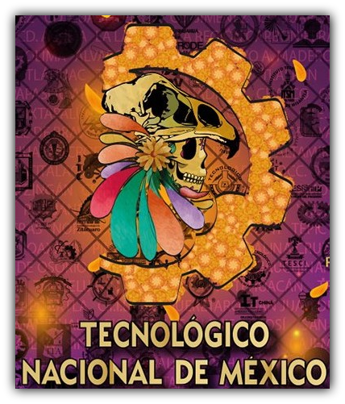

Nombre:Angel Hernandez Diaz
Materia: Programacion Web
FESTIVAL DE LAS CALAVERAS
Buenas tardes a todos
Hoy nos reunimos en el Tecnológico de Delicias para celebrar una de las festividades más icónicas y
significativas de la cultura mexicana: el Día de Muertos. Es un honor darles la bienvenida a nuestro evento
"Celebrando el Día de Muertos en el Tecnológico de Delicias: Una Tradición Mexicana de Luz y Color".
El Día de Muertos no es solo una fecha en el calendario, sino un homenaje a la vida y a aquellos que han
partido. Es una festividad que combina la herencia prehispánica con influencias católicas, creando un
mosaico de tradiciones y simbolismo que refleja nuestra profunda conexión con nuestros seres queridos
fallecidos.
¡Esperamos que disfruten del evento y se sumerjan en la
belleza y el significado de esta tradición mexicana! ¡Bienvenidos a "Celebrando el Día de Muertos en el
Tecnológico de Delicias: Una Tradición Mexicana de Luz y Color"!

ACTIVIDADES
a) Exposición de tapetes por carrera.
b) Exposición de un único altar colaborativo.
c) Concurso de catrinas y catrines.
d) Concurso de calaveritas.
e) Conferencia a cargo de Cristóbal Pérez.
f) Participación del Ballet Folklórico Omáwari
g) Participación de la rondalla del TecNM Campus Delicias.
h) Exposición de leyendas mexicanas.
i) Cine.
j) Venta de alimentos y bebidas.
PROPUESTA DEL PROGRAMA
ACTIVIDADES
LUGAR
HORA
Conferencia “la muerte en la filosofía”
Audiovisual
De 11:00 a 12:00
Exposición de tapetes
Explanada
De 11:00 a 20:00
Exposición de altar
Explanada
De 11:00 a 20:00
Cine
Audiovisual/Explanada
De 13:00 a 20:00
Concurso de catrinas y catrines (Fase I)
El escogido por cada capítulo/rama estudiantil.
De 13:00 a 15:00
Concurso de catrinas y catrines (Fase II)
Explanada
De 16:00 a 17:00
Presentación del Ballet Folklórico Omáwari
Explanada
De 17:00 a 17:30
Presentación de la rondalla del campus
Explanada
De 17:30 a 18:00
Concurso de calaveritas
Explanada
De 18:00 a 18:30
Exposición de Leyendas Mexicanas
Explanada
De 18:30 a 20:00
Venta de alimentos y bebidas
Explanada
De 15:00 a 20:00
SUSCRIBETE
"No olvides seguirnos en nuestra pagina de Facebook"